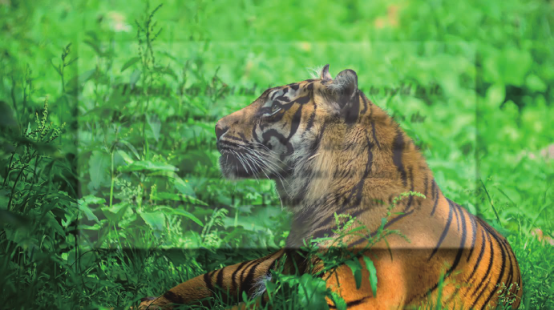
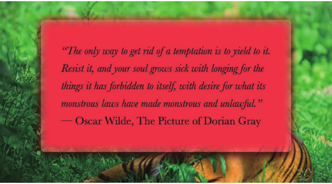
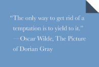
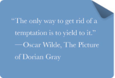
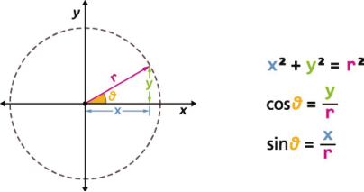
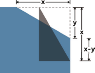

CSS揭秘笔记4-视觉效果
本节主要介绍一些视觉效果的实现技巧。
单侧投影
大多数人使用 box-shadow 的方法是，指定三个长度值和一个颜色值：1
box-shadow: 2px 3px 4px rgba(0,0,0,.5);
接下来的几个步骤很好地（虽然在技术上还不够严谨）以图形化的方式讲解了投影是如何绘制的
box-shadow 的绘制原理
- 以该元素相同的尺寸 1① 和位置，画一个 rgba(0,0,0,.5) 的矩形。
- 把它向右移 2px ，向下移 3px 。
- 使用高斯模糊算法（或类似算法）将它进行 4px 的模糊处理。这在本质上表示在阴影边缘发生阴影色和纯透明色之间的颜色过渡长度近似于模糊半径的两倍（比如在这里是 8px ）。
- 接下来，模糊后的矩形与原始元素的交集部分会被切除掉，因此它看起来像是在该元素的“后面”。这跟大多数开发者所理解的情况（元素叠在模糊后矩形的上层）可能稍有不同。不过，在某些场景下，意识到没有任何投影绘制在元素的下层十分重要。举例来说，如果给元素设置一层半透明的背景，就看不到它下层有任何投影。这一点跟 text-shadow 不同，因为文字下层的投影不会被裁切。
使用 4px 的模糊半径意味着投影的尺寸会比元素本身的尺寸大约 8px ，因此投影的最外圈会从元素的四面向外显露出来。只需改变偏移量，就可以把投影的顶部和左侧隐藏起来，只要这两个方向上的偏移量不小于4px 就可以了。
box-shadow 的第四个长度参数。它排在模糊半径参数之后，称作扩张半径。这个参数会根据你指定的值去扩大或（当指定负值时）缩小投影的尺寸。举例来说，一个 -5px 的扩张半径会把投影的宽度和高度各减少 10px （即每边各 5px ）。
从逻辑上来说，如果应用一个负的扩张半径，而它的值刚好等于模糊半径，那么投影的尺寸就会与投影所属元素的尺寸完全一致。除非用偏移量（前两个长度参数）来移动它，将完全看不见任何投影。因此，如果给投影应用一个正的垂直偏移量，就会在元素的底部看到一道投影，而元素的另外三侧是没有投影的，这正是一直苦苦追寻的效果：1
box-shadow: 0 5px 4px -4px black;
邻边投影
如何在元素的两条边上设置投影。如果这两条边是相邻的（比如右侧和底部），就比较容易一些。调整如下：
- 不应该把投影缩得太小，而是只需把阴影藏进一侧，另一侧自然露出就好。因此，扩张半径不应设为模糊半径的相反值，而应该是这个相反值的一半。
- 需要指定两个偏移量，因为希望投影在水平和垂直方向上同时移动。它们的值需要大于或等于模糊半径的一半，因为希望把投影藏进另外两条边之内。
举例来说，把一个 black 、 6px 的投影设置到右侧和底部可以这样做：1
box-shadow: 3px 3px 6px -3px black;
双侧投影
当想把投影设置在元素的两条对边（比如左侧和右侧）时，因为扩张半径在四个方向上的作用是均等的（也就是说，无法指定投影在水平方向上放大，而在垂直方向上缩小）1① ，唯一的办法是用两块投影（每边各一块）来达到目的。然后基本上就是把“单侧投影”中的技巧运用两次：1
2box-shadow: 5px 0 5px -5px black,
-5px 0 5px -5px black;
示例DEMO：
See the Pen 单侧、双侧、邻边投影 by XmoyKing (@xmoyking) on CodePen.
不规则投影
当想给一个矩形或其他能用 border-radius 生成的形状加投影时， box-shadow 的表现都堪称完美。但是，当元素添加了一些伪元素或半透明的装饰之后，它就有些力不从心了，因为 border-radius 会地忽视透明部分。这类情况包括：
- 半透明图像、背景图像、或者 border-image （比如老式的金质像框）；
- 元素设置了点状、虚线或半透明的边框，但没有背景（或者当background-clip 不是 border-box 时）；
- 对话气泡，它的小尾巴通常是用伪元素生成的；
- 在“切角效果”中的切角形状；
- 几乎所有的折角效果；
- 通过 clip-path 生成的形状
滤镜效果规范为这个问题提供了一个解决方案。它引入了一个叫作 filter 的新属性，这个属性也是从 SVG 那里借鉴过来的。只需要一些函数就可以很方便地指定滤镜效果了，比如blur() 、 grayscale() 以及需要的 drop-shadow() ！甚至可以把多个滤镜串连起来，只要用空格把它们分隔开就可以了，比如：1
filter: blur() grayscale() drop-shadow();
drop-shadow() 滤镜可接受的参数基本上跟 box-shadow 属性是一样的，但不包括扩张半径，不包括 inset 关键字，也不支持逗号分割的多层投影语法。举个例子，上面的投影：1
box-shadow: 2px 2px 10px rgba(0,0,0,.5);
可以这样来写：1
filter: drop-shadow(2px 2px 10px rgba(0,0,0,.5));
CSS 滤镜最大的好处在于，它们可以平稳退化：当浏览器不支持时，不会出现问题，只不过没有任何效果而已。如果你确实需要这个效果在尽可能多的浏览器中显示出来，可以同时附上一个 SVG 滤镜，这样可以得到稍微好一些的浏览器支持度。你可以在滤镜效果规范中为每个滤镜函数找到对应的 SVG 滤镜版本。你可以把 SVG滤镜和简化的 CSS 滤镜放在一起使用，让层叠机制来决定哪一行最终生效：1
2filter: url(drop-shadow.svg#drop-shadow);
filter: drop-shadow(2px 2px 10px rgba(0,0,0,.5));
示例DEMO：
See the Pen 不规则投影 by XmoyKing (@xmoyking) on CodePen.
如果 SVG 滤镜是存放在一个独立文件里的，那它就无法像一个简洁易用的函数那样在 CSS 代码中进行随意配置；如果它是内联的，则又会搅乱你的代码。参数需要写死在文件内部，因此每当新加一种哪怕是大同小异的投影效果时，都需要多准备一个文件，这显然是难以接受的。当然，还可以使用 data URI（它也会省掉额外的 HTTP 请求），但这个方法仍然会带来文件体积的增长。总的来说，这个方法只是一种回退方案，因此只要把SVG 滤镜控制在一定数量以内，哪怕它们的效果大同小异，也是说得过去的。
另外一件需要牢记的事情就是，任何非透明的部分都会被一视同仁地打上投影，包括文本（如果背景是透明的），你可能会想，是不是可以通过 text-shadow: none; 来取消掉文本上的投影呢？其实 text-shadow 跟它是完全不相干的两码事，因此这样做并不能取消文本上的 drop-shadow() 效果。此外，如果你已经用 text-shadow 在文本上加了投影效果，文本投影还会被 drop-shadow() 滤镜再加上投影，这本质上是给投影打了投影！
染色效果
为一幅灰度图片（或是被转换为灰度模式的彩色图片）增加染色效果（color tint），是一种流行且优雅的方式，可以给一系列风格迥异的照片带来视觉上的一致性。通常会在静止状态下应用这个效果，当发生 :hover或其他交互时再去除。
一直以来，需要使用图像处理软件来生成图片的两个版本，然后再写一些简单的 CSS 代码来处理这两个版本的交替显现。这个方法行得通，但它会导致更大的文件体积和额外的 HTTP 请求，而且在可维护性方面也是一场噩梦。想像一下，一旦决定改变这个效果的主色调，就不得不处理所有的图片，为它们重新制作全套的单色版本！
另外一种方法是：在图片的上层覆盖一层半透明的纯色；或者把图片设置为半透明并覆盖在一层实色背景之上。但这其实并不是真正的染色效果：不仅没有把图片中的各种颜色转换为目标色调，同时也极大地削弱了图片的对比度。
此外还有基于 JavaScript 的方案，把图片置入<canvas>元素中，并利用脚本对其进行染色处理。这确实可以得到真实的染色效果，但性能不佳，而且限制很多。
基于滤镜的方案
由于没有一种现成的滤镜是专门为这个效果而设计的，需要花一些心思，把多个滤镜组合起来。
要使用的第一个滤镜是 sepia() ，它会给图片增加一种降饱和度的橙黄色染色效果，几乎所有像素的色相值会被收敛到 35~40 如果这种色调正是想要的，那就可以收工了。不过的需求通常并非如此。
如果想要的主色调的饱和度比这更高，可以用 saturate() 滤镜来给每个像素提升饱和度。假设想要的主色调是 hsl(335, 100%,50%) ，那就需要把饱和度提升一些，于是将饱和度参数设置为 4。具体取值取决于实际情况，通常需要用肉眼来观察和判断。
这两个滤镜的组合会让图片具有一种暖金色的染色效果。
若并不希望把图片调为这种橙黄色调，而是稍深的亮粉色。则还需要再添加一个 hue-rotate() 滤镜，把每个像素的色相以指定的度数进行偏移。为了把原有的色相值 40 改变为 335，需要增加大约 295 度（335 – 40）：1
filter: sepia(1) saturate(4) hue-rotate(295deg);
基于混合模式的方案
滤镜方案是行之有效的，但它产生的结果与在图像处理软件中得到的效果不完全一致。即使想把图像调为一种很亮的颜色，结果仍然会显得像褪了色一般。如果尝试在 saturate() 滤镜中增加饱和度，又会得到一种不自然的、过度风格化的效果。不过，幸好还有另一种更好的实现方法——混合模式！
当两个元素叠加时，“混合模式”控制了上层元素的颜色与下层颜色进行混合的方式。用它来实现染色效果时，需要用到的混合模式是 luminosity 。这种 luminosity 混合模式会保留上层元素的 HSL 亮度信息，并从它的下层吸取色相和饱和度信息。如果在下层准备好想要的主色调，并把待处理的图片放在上层并设置为这种混合模式，那本质上不就是在做染色处理吗？
要对一个元素设置混合模式，有两个属性可以派上用场： mix-blend-mode 可以为整个元素设置混合模式， background-blend-mode 可以为每层背景单独指定混合模式。这意味着，如果用这个方案来处理图片，实际上有两种选择。不过这两者各有所短。
- 第一种选择：需要把图片包裹在一个容器中，并把容器的背景色设置为想要的主色调。
- 第二种选择：不用图片元素，而是用
<div>元素——把这个元素的第一层背景设置为要染色的图片，并把第二层的背景设置为想要的主色调。
针对不同的场景，可以选择这两者的其中之一。举个例子，如果希望对一个 <img> 元素应用这个效果，就需要把它包含在另一个元素内部。不过如果已经有了这一层容器，比如 <a> ，那就水到渠成了：1
2
3<a href="#something">
<img src="tiger.jpg" alt="Rawrrr!" />
</a>
然后，只需要两行声明就可以实现这个效果：1
2
3
4
5
6a {
background: hsl(335, 100%, 50%);
}
img {
mix-blend-mode: luminosity;
}
和 CSS 滤镜类似，混合模式可以平稳退化：如果不被支持，效果只是不出现而已，图片本身还是完好可见的。
有一件事情需要注意，滤镜是可动画的，而混合模式则不是。上面已经见识过了，一张图片只需要在 filter 属性上设置好 CSS 过渡之后就可以从全彩样式慢慢淡化为单色样式，但无法对混合模式做同样的事情。不过这并不表示过渡动画是完全不可能的。
mix-blend-mode 是把整个元素向下进行混合，而不管它的下层是什么。因此，如果把这个属性设置为 luminosity 混合模式，那图片就总是会跟某些东西进行混合。此外，使用 background-blend-mode 属性则可以让每层背景跟它的下层背景进行混合，但并不关心元素之外是什么情况。另外，当只有一个背景图像以及一个透明背景色时，不会出现任何混合效果！
HTML 代码需要稍作调整：1
2<div class="tinted-image" style="background-image:url(tiger.jpg)">
</div>
只需要对一个 <div> 元素设置 CSS:1
2
3
4
5
6
7
8
9
10
11.tinted-image {
width: 640px;
height: 440px;
background-size: cover;
background-color: hsl(335, 100%, 50%);
background-blend-mode: luminosity;
transition: .5s background-color;
}
.tinted-image:hover {
background-color: transparent;
}
不过，就像前面提到的那样，这两种方法都不够理想。它们的主要问题在于：
- 图片的尺寸需要在 CSS 代码中写死；
- 在语义上，这个元素并不是一张图片，因此并不会被读屏器之类的设备读出来。
毛玻璃效果
半透明颜色最初的使用场景之一就是作为背景。将其叠放在照片类或其他花哨的背层之上，可以减少对比度，确保文本的可读性。这种效果确实很有视觉冲击力，但仍然可能导致文字很难阅读，特别是当不透明度较低或背层图案太过花哨时。
举个例子，图中 main 元素的背景是半透明的白色。结构大致是这样的：1
2
3
4
5
6
7
8
9
10
11<main>
<blockquote>
"The only way to get rid of a temptation[...]"
<footer>－
<cite>
Oscar Wilde,
The Picture of Dorian Gray
</cite>
</footer>
</blockquote>
</main>
CSS 代码可能是这样的（简短起见，这里只列出了关键样式）：1
2
3
4
5
6body {
background: url("tiger.jpg") 0 / cover fixed;
}
main {
background: hsla(0,0%,100%,.3);
}
文字确实难以看清，因为它后面的图片太过花哨了，而它的背景色只有 30% 的不透明度。当然，可以通过提升背景色的不透明度来增加文本的可读性，不过这样一来整个效果就没有那么生动了
在传统的平面设计中，这个问题的解决方案通常是把文本层所覆盖的那部分图片区域作模糊处理。模糊的背景看起来不那么花哨，因此在它之上的文本就相对比较易读了。
借助 blur() 滤镜，我们在 CSS 中获得了对元素进行模糊处理的能力。在 SVG 中很早就可以使用模糊滤镜了，而这个 CSS 滤镜本质上就是它的硬件加速对应版本。

不过，如果直接在这个例子中使用 blur() 滤镜，整个元素都会被模糊，文本反而变得更加无法阅读了。有没有某种方法可以只对元素的背层（即被该元素遮住的那部分背景）应用这个滤镜呢？
假设大背景的 background-attachment 值是 fixed ，这种情况是有可能的 1① ，只不过不太常见。由于不能直接对元素本身进行模糊处理，就对一个伪元素进行处理，然后将其定位到元素的下层，它的背景将会无缝匹配 <body> 的背景。
首先，添加一个伪元素，将其绝对定位，并把所有偏移量置为 0 ，这样就可以将它完整地覆盖到 <main> 元素之上：
现在该把半透明红色背景换掉了，换成跟背层完全匹配的背景。要实现这一点，我们要么把 <body> 的背景复制过来，要么把伪元素的背景声明合并过去。1
2
3
4
5
6
7
8
9
10
11
12
13body, main::before {
background: url("tiger.jpg") 0 / cover fixed;
}
main {
position: relative;
background: hsla(0,0%,100%,.3);
}
main::before {
content: '';
position: absolute;
top: 0; right: 0; bottom: 0; left: 0;
filter: blur(20px);
}
模糊效果在中心区域看起来非常完美，但在接近边缘处会逐渐消退。这是因为模糊效果会削减实色像素所能覆盖的范围，削减的幅度正是模糊半径的长度。对伪元素应用一个 red 背景有助于看清事情的真相:

为了补偿这种情况，我们需要让伪元素相对其宿主元素的尺寸再向外扩大至少 20px （即它的模糊半径）。可以通过 -20px 的外边距来达到目的，由于不同浏览器的模糊算法可能存在差异，用一个更大的绝对值（比如 -30px ）会更保险一些。这个方法可以修复边缘模糊消退的问题，但现在的情况是有一圈模糊效果超出了容器，这让它看起来不像毛玻璃，而更像是玻璃脏了。
只要对 main 元素应用overflow: hidden; 就可以把多余的模糊区域裁切掉了。
折角效果
把元素的一个角（通常是右上角或右下角）处理为类似折角的形状，再配上或多或少的拟物样式，这些方法的基本原理通常是在右上角增加两个三角形：一个三角形用来体现折页的形状，另一个白色的三角形遮住元素的一角，用来模拟翻折所产生的缺口。这两个三角形通常都是由经典的边框技巧来生成的。
在以下场景中还会暴露出明显的缺陷。
- 当折角元素之下的背景不是纯色，而是一幅图案、一层纹理、一张照片、一幅渐变或其他任何一种背景图像时。
- 当我们想要一个 45°以外的（旋转的）折角时。
45°折角的解决方案
从一个右上角具有斜面切角的元素开始，这个切角是由“切角效果”中的渐变方案实现。要用这个技巧在右上角创建一个大小为 1em的斜面切角。

接下来所需要做的就是增加一个暗色的三角形来实现翻折效果。实现方法是增加另一层渐变来生成这个三角形并将其定位在右上角，这样就可以通过 background-size 来控制折角的大小。
为了生成这个三角形，我们所需要的就是一个有角度的线性渐变，而这个渐变的两个色标需要在正中央重合：1
2
3
4background: #58a; /* 回退样式 */
background:
linear-gradient(to left bottom, transparent 50%, rgba(0,0,0,.4) 0) no-repeat 100% 0 / 2em 2em,
linear-gradient(-135deg, transparent 1.5em, #58a 0);
See the Pen 45°折角 by XmoyKing (@xmoyking) on CodePen.
其他角度的解决方案

现实生活中的折角往往不是精确的 45°。如果希望它看起来更真实一些，可以稍稍改变一下角度，比如 -150deg 可以产生 30°的切角。不过，如果只是改变斜面切角的角度，那么表示翻折部分的三角形并不会跟着改变，这将导致整体效果被破坏，此外，调整这个三角形的尺寸并不容易。它的尺寸并不是由角度来定义的，而是由宽度和高度来定义的。怎样才能得到需要的宽度和高度呢？好的，这回该请出三角函数了！

当知道这两个 30-60-90 直角三角形的某一条直角边的长度时，基本上就可以算出斜边的长度。只要知道了直角三角形的角度和某一条边的长度，就可以通过正弦函数、余弦函数以及勾股定理计算出另外两条边的长度。

折页三角形是需要微微旋转的，它的尺寸跟从元素角上“切”下来的那个三角形应该是一致的。1
2
3
4
5
6
7
8
9
10
11
12
13
14
15
16
17
18.note {
position: relative;
background: #58a; /* 回退样式 */
background: linear-gradient(-150deg, transparent 1.5em, #58a 0);
border-radius: .5em;
}
.note::before {
content: '';
position: absolute;
top: 0; right: 0;
background: linear-gradient(to left bottom, transparent 50%, rgba(0,0,0,.2) 0, rgba(0,0,0,.4)) 100% 0 no-repeat;
width: 1.73em;
height: 3em;
transform: translateY(-1.3em) rotate(-30deg);
transform-origin: bottom right;
border-bottom-left-radius: inherit;
box-shadow: -.2em .2em .3em -.1em rgba(0,0,0,.15);
}
演示DEMO：
See the Pen 任意角度折角 by XmoyKing (@xmoyking) on CodePen.
使用预处理器的mixin：1
2
3
4
5
6
7
8
9
10
11
12
13
14
15
16
17
18
19
20
21
22
23
24
25@mixin folded-corner($background, $size, $angle: 30deg) {
position: relative;
background: $background; /* 回退样式 */
background: linear-gradient($angle - 180deg, transparent $size, $background 0);
border-radius: .5em;
$x: $size / sin($angle);
$y: $size / cos($angle);
&::before {
content: '';
position: absolute;
top: 0; right: 0;
background: linear-gradient(to left bottom, transparent 50%, rgba(0,0,0,.2) 0, rgba(0,0,0,.4)) 100% 0 no-repeat;
width: $y; height: $x;
transform: translateY($y - $x) rotate(2*$angle - 90deg);
transform-origin: bottom right;
border-bottom-left-radius: inherit;
box-shadow: -.2em .2em .3em -.1em rgba(0,0,0,.2);
}
}
/* 调用... */
.note {
@include folded-corner(#58a, 2em, 40deg);
}